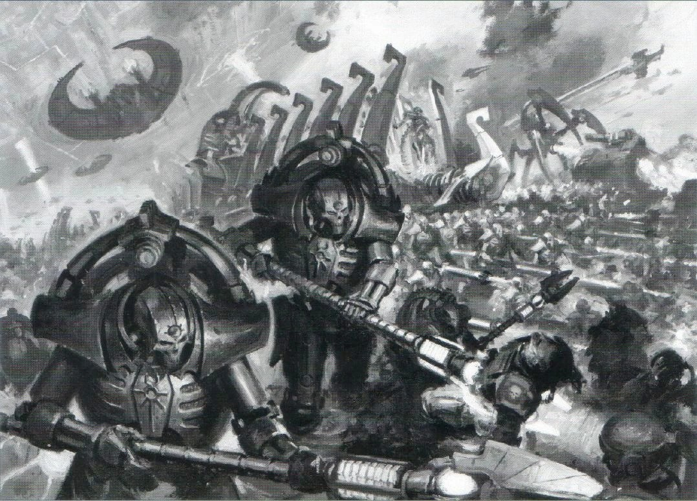
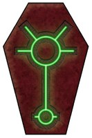

Necron dynasty
| Necron dynasties | |
|---|---|
| Royal houses of the Necrons | |
 The legions of a dynasty on the march, from an Ordo Xenos dossier Artwork © Games Workshop | |
| Origin | The Necrontyr Empire, more than 60,000,000 years before M41 (estimated) |
| Ruler | Phaeron, over a dynasty |
| Number | Hundreds, perhaps thousands; unrecorded |
| Greatest known | Sautekh, Szarekhan |
| Territories | Tomb Worlds in the Ultima Segmentum, Segmentum Tempestus, Segmentum Obscurus and elsewhere |
| Mark | Dynastic glyph on the death mask or cloak |
A Necron dynasty is one of the royal houses of the Necrontyr, the species that built the Necron empire sixty million years ago. Each Necron belongs by blood, conquest or programming to a dynasty, and each dynasty is a realm of Tomb Worlds ruled by a phaeron through a hierarchy of overlords, lords and nemesors. The dynasties are the political units of the awakening Necron civilisation, and its principal weakness: they are rivals, and the agendas of overlords within one dynasty seldom coincide.[1]
Before the arrival of the C'tan, hundreds of dynasties ruled the Necrontyr. Many thousands were destroyed in the Wars of Secession, in the revolt against biotransference and the C'tan, in the War in Heaven and in the Great Sleep that followed. The Ordo Xenos does not know how many have survived. The ones listed in the sealed records of the Ordo number a few dozen, and those that matter to the Imperium fewer still.[1][2]
Structure
[edit]The Necron nobility has a rigid order that was retained during biotransference and has become more fixed with time. The highest nobles are the phaerons, who rule whole dynasties. Beneath each phaeron are overlords, who rule clusters of Tomb Worlds, and beneath those are the lords, each charged with a single core world or frontier world. These titles are the same in every dynasty. Titles of lower rank, such as grav, vymark and thantar, vary and are often grand in proportion to the low standing of the holder.[1]
In war, the overall commander of a campaign is given the title of nemesor, which is common to all dynasties and allows Necron armies that have never met to fight together. The transition of Imotekh the Stormlord from nemesor to phaeron of the Sautekh in 781.M41 was eased by it. Each phaeron and overlord keeps a royal court of lords and Crypteks. The larger the court, the larger the legion at the noble's command: even a petty noble commands a legion of Necron Warriors, phalanxes of Immortals and Deathmarks, and a phalanx of Lychguard.[1]
Several forces serve no dynasty. The Triarch Praetorians, survivors of the ruling council that governed the Necrontyr, join any nemesor they judge to be acting in the interest of the Necrons as a whole. The Destroyer cults go where there is slaughter. The Flayed Ones, a degraded remnant, appear at Necron battles without invitation.[1]
Glyphs
[edit]All Necron nobles carry the Ankh of the Triarch, the symbol of the old empire, and every dynasty has its own glyph, unchanged for millions of years. A noble bears the full glyph only if of the highest rank, and lesser nobles bear a part of it. A noble without a glyph is regarded as untrustworthy. Common soldiers have none, but the colour of their armour echoes the heraldry of their houses. War engines, such as the Monolith and the Doomsday Ark, often bear the glyph as the personal weapons of a noble.[1]
 Sautekh |
 Nihilakh |
 Nephrekh |
 Novokh |
 Thokt |
 Mephrit |
 Nekthyst |
 Oruscar |
Notable dynasties
[edit]Sautekh
[edit]The Sautekh Dynasty was the third most powerful of the Necrontyr houses before biotransference and has become the most powerful and most aggressive of the surviving ones. Its crownworld is Mandragora, which came through the Great Sleep intact with its stasis-crypts full. Imotekh the Stormlord took the crown there in 781.M41 and drove the Ork hosts of Warboss Snagratoof from the dynasty's coreworlds. The Sautekh have made war on the Imperium's eastern border since then, and in the Era Indomitus the Phaeron has refused to submit to the returned Silent King.[1]
Szarekhan
[edit]The Szarekhan Dynasty is the house of Szarekh, the last Silent King, who ruled the Necrontyr at the time of the War in Heaven. Its fate in the long sleep is little known to the Imperium, and its Tomb Worlds are held by its nobles and by the Triarch.[1]
Nihilakh
[edit]The Nihilakh are isolationist and have lost few troops to expansion. Their crownworld is Gheden, half of which is phased into a pocket dimension for all but a few hours of each orbit, so that it is almost impossible to attack. Beneath its surface is the Oracle Chamber, where an alien prophet is kept alive. His visions are partly false, for he resents his captivity.[1]
Nekthyst, Novokh and others
[edit]The Nekthyst earned a name as turncoats in the Wars of Secession, and few phaerons trust them. Their crownworld is Moebius, whose catacombs are a shifting maze. The Novokh, of the northern Ultima Segmentum, paint their legions crimson in memory of ritual bloodletting. The Mephrit were the solar executioners of the Silent King in the War in Heaven and are remembered as planet-killers. The Nephrekh, under Phaeron Sylphek, draw energy from the three suns of their crownworld Aryand. The Thokt of the Segmentum Pacificus fashion radiation weapons in the Hyrakii Deeps. The Maynarkh have long served the Silent King as conquerors and enforcers. The Oruscar hold a few worlds, among them Thanatos, which holds the Celestial Orrery, a map of every star in the galaxy that can be used to destroy them. They are old rivals of the Sautekh. The Ogdobekh are known as technicians, and the Atun rule worlds on the galactic northern rim, the cradle of the Necrontyr. The Altymhor, under Overlord Vitokh, have subjugated human worlds near the Eye of Terror. The Charnovokh lost many of their Tomb Worlds to Hive Fleet Behemoth.[1][2]
Relations
[edit]The dynasties are more often rivals than allies. The rivalry of Sautekh and Oruscar is dormant, not ended. A phaeron who takes a world from another dynasty must fit its nobles into his own order, and that task has set off wars. Such feuds, and the habit of a phaeron's rivals to wait out a campaign, have saved the Imperium many times. The return of the Silent King in the Era Indomitus is the first force in sixty million years that can order the dynasties together, and the Ordo Xenos has not decided whether that is to be hoped for or feared.[3]
Timeline
[edit]| Date | Event |
|---|---|
| c. 65,000,000 years before M41 (estimated) | The Necrontyr are ruled by hundreds of dynasties; the Wars of Secession are fought; Szarekh accepts the C'tan's bargain |
| c. 60,000,000 years before M41 (estimated) | Biotransference creates the Necrons; the War in Heaven and the revolt against the C'tan |
| Following the war | The Great Sleep; most dynasties are lost or broken |
| Early M41 | Tomb Worlds begin to wake along the eastern rim; the Dyvanakh of Trakonn stir |
| 781.M41 | Imotekh the Stormlord is crowned phaeron of the Sautekh at Mandragora |
| 798.M41 | Imotekh destroys the Farseer Eldorath Starbane's warhost in a tomb |
| 930.M41 | The Sautekh campaigns on Schrödinger VII |
| 998.M41 | The Agdagath abandon the Tomb World of Tyr to the Flayed Ones |
| M42 | The Silent King returns; the Sautekh refuse allegiance |
See also
[edit]
References
[edit]- ^ a b c d e f g h i j Codex: Leagues of Votann (9th Edition), pg. 30. Games Workshop. Codex: Space Marines (9th Edition), pg. 58. Games Workshop.
- ^ a b Codex: Necrons (8th Edition), pp. 69, 100, 113. Games Workshop. Counter, Ben. The World Engine (novel). Black Library.
- ^ Rath, Robert. The Infinite and The Divine (novel). Black Library. Codex: Necrons (7th Edition), pp. 9, 15, 40, 54, 230, 236, 238, 256. Games Workshop.